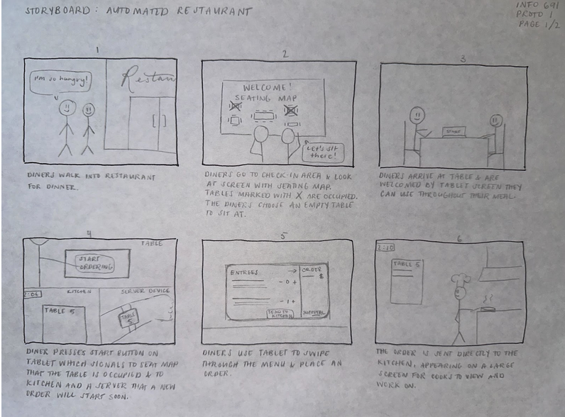
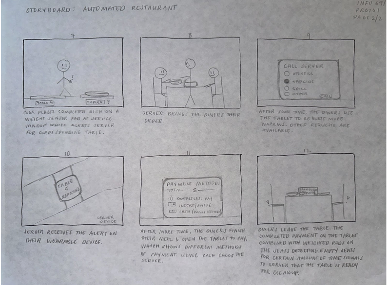
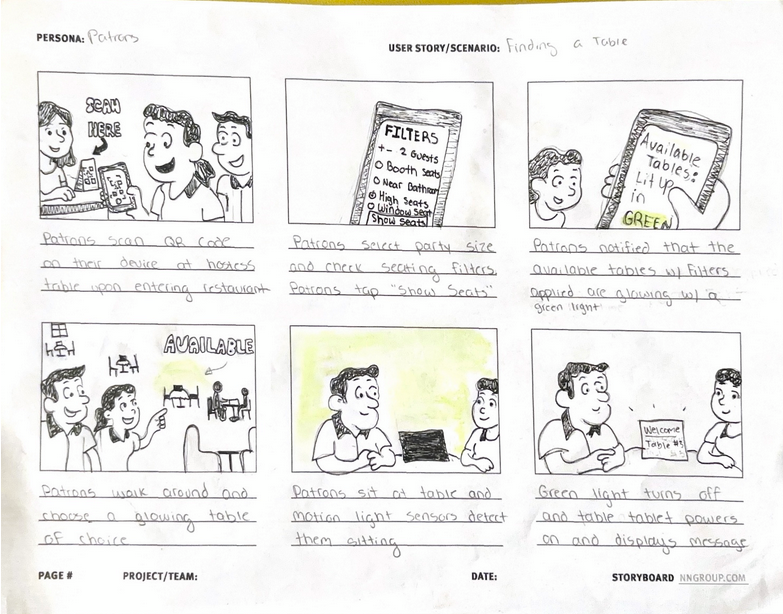
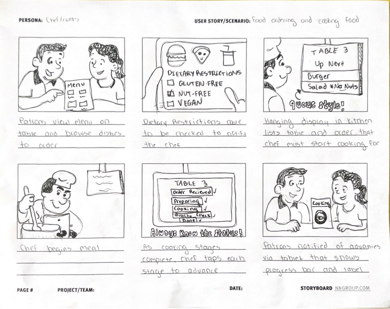
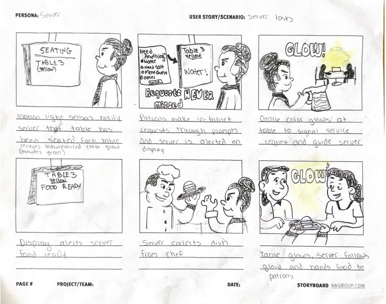
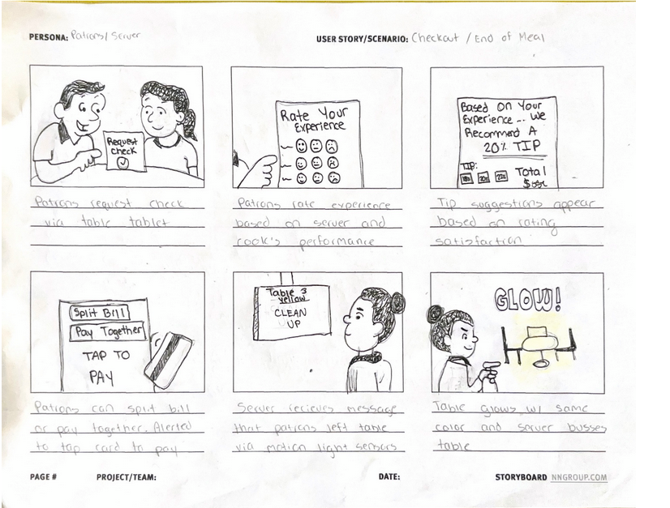
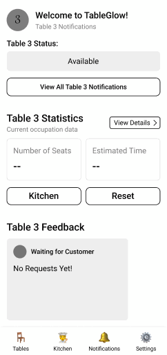

Using tools that improve the experience on both sides of the table, our team has designed a powerful system to make dining out smoother and more enjoyable for both guests and staff. Our design focuses on the use of interactive table tablets to give patrons the freedom to seat themselves, place orders, request service, and complete payment. With features such as ambient table lighting and weight-sensing pads that work together to guide both diners and staff, our product provides real-time feedback and creates smoother coordination in the restaurant space. For example, table lights indicate availability and order readiness and weight sensors in the kitchen alert servers when a meal is ready for delivery. Meanwhile, wearable devices and digital displays provide servers and cooks with instant updates and guest requests resulting in faster response times and reduced miscommunication. By prioritizing self-seating, digital ordering, real-time order tracking, and fast checkout, we give patrons greater control over their dining experience and aim to minimize errors created by staff. To visualize the user journey for patrons, servers and cooks, we created several storyboards and wireframes that depict this experience in greater detail.
Storyboards
After brainstorming designs for each step of the user journey, our team created two storyboards–one (Storyboard A) that depicts the overall experience of automating a restaurant, and another (Storyboard B) that details the journey from the perspectives of the patrons, servers, and cooks. While similar, each storyboard demonstrates various possibilities of designs for the automation system we imagine.






Storyboards – Details
Figure 2’s storyboard presents a detailed view of the patrons finding available seating. Patrons scan a QR code on their device, which opens an interface allowing them to apply seating filters. These filters include party size and filters for types of seats the patrons wish for such as booth seating, near a window, or high-seats. Tables that align with the party size and selected seating filters light up softly with green color in the restaurant space. Patrons choose a seat from the lights and motion sensors detect their presence and activate the table’s tablet. Overall, Figure 1 highlights that patrons enter the restaurant and view a digital seating map that shows which tables are available. After choosing a table, they are greeted by a tablet located on the table that guides them throughout multiple steps from placing an order to paying the bill.
After seating has been chosen, the patrons place an order which is sent directly to the chef/cooks. This information is also sent to the server's device. Diners can use the tablet to make additional requests, such as asking for utensils or napkins. As shown in Figure 1, servers receive alerts on both a wearable device or as shown in Figure 6, a display located around the restaurant depending on the location of the servers.
Figure 4 focuses on cooks or chefs' workflow. Dietary restrictions may be selected by patrons after each meal selection. Restrictions are automatically flagged for the cook to be immediately cautious of. The cooks receive real-time updates on incoming orders through their wall display, and as each stage of food prep progresses, they check off the steps in the system. On the table tablet, patrons are able to view a live status bar.
Figure 6 focuses entirely on server interactions and responsibilities. Servers are alerted when a table is seated through colored lighting cues and motion detection. When patrons make service requests through the tablet (such as for water or additional condiments), the server is immediately alerted. Once the meal is prepared, cooks place the dish on a weight sensor pad that aligns with the table number (Figure 2). The sensor notifies the server and the display or wearable device shows which dish corresponds to which table. The table glows to help the server easily locate it.
At the end of the meal, diners rate their experience on the table and a tip suggestion is automated and displayed based on the satisfaction level (Figure 6). Patrons are free to choose whether to pay based on their automated tip or they can choose their own tip amount. The patrons pay through the tablet and once they leave, the table glows again with the designated color to alert that the table is ready for cleanup.
Feedback
One person selected to review our second storyboard was inspired by the perspective of the server as they work in a restaurant. They found the proposed table glow features in Figure 5 to be especially useful, as the color would potentially help them distinguish between tables quickly and efficiently in their real job. One concern they had was the feasibility of the motion detector that signals a table is occupied. The participant expressed concern about people other than the customers activating the sensor, such as bussers that clean the table. This led us to consider developing an experience on the customer’s end that signifies their presence to avoid this confusion.
Wireframe
Based on the feedback from each of our storyboards, our team chose to detail two ideas: the server table management interface and digital tablet ordering for patrons.

Design Justification
Our design process was driven by imaginative exploration, allowing us to creatively envision how automation could transform the restaurant experience for patrons, servers, and cooks. From the outset, our team aimed to reimagine a dining environment where technology works seamlessly to create a smoother, more efficient flow for everyone involved. Our storyboards served as foundational tools to visualize this concept—Storyboard A provided a holistic view of the fully automated dining experience, while Storyboard B allowed us to dive into the unique journeys of patrons, servers, and cooks. These visual narratives helped us consider how ambient cues, real-time data, and digital interactions could come together to improve communication and reduce friction in the dining process. Feedback on these storyboards sparked valuable reflection and iteration—for example, rethinking how motion sensors could more accurately detect customer presence without interference from staff.
Building on the narrative flow of our storyboards, we developed wireframes that illustrate two core elements of our proposed system: the digital tablet interface for patrons and the server table management system. These wireframes brought clarity and structure to our ideas, translating abstract concepts into functional screens. The digital tablet empowers patrons with control over their dining experience—from placing orders and calling a server for assistance to paying the bill—while the server interface supports efficient table service and timely response to requests. Our iterative design process emphasized consistency, clarity, and contextual awareness, with each step building on the last. Together, the storyboards, feedback, and wireframes paint a cohesive picture of a future-forward dining experience where thoughtful automation enhances human connection, and design serves as a bridge between imagination and meaningful interaction.